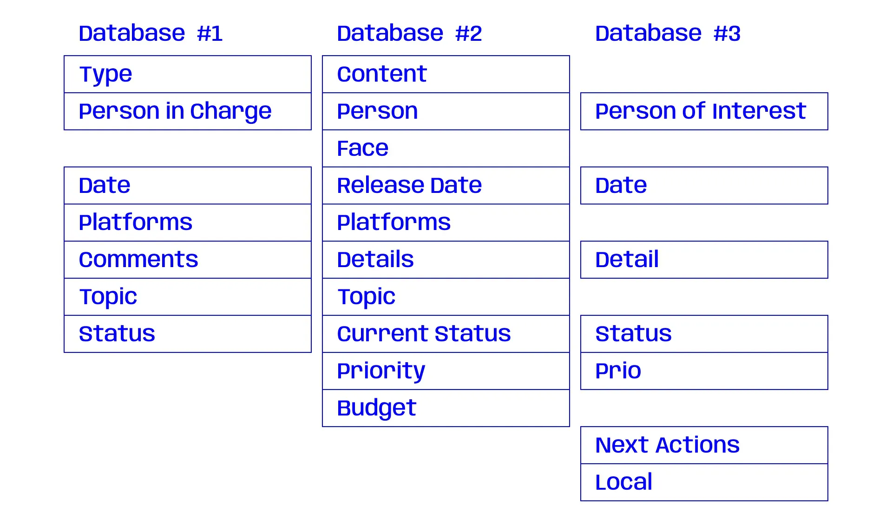

David HerdeiroThink Your Notion Databases Ahead2024 Dec. 27
I was introduced to Notion a few years ago. By that time we were just
using it as a simple Wiki: online pages with some text and images.
Impressive wasn’t at all the word to describe it. A few months later,
amidst a team restructure, something clicked:
You can’t break Notion (unless you really try to)
Notion is the perfect tool to lose yourself and experiment different
types of organization. There’s tables and databases, you can embed other
platforms on it, you can upload lossless images and videos, apply
searching filters, rules and automations. And the best of all: Real time
collaboration.
In a matter of months, our Notion use grew like crazy.
Graph like image, showing the increase of Notion use over
time
Fast forward a few months in, I realized that my team was fighting an
organizational issue that I could solve. Here’s the thing: We had three
main, separated databases, all with their own
Kanban boards
and tickets.
Representation of three Kanban boards: Social Media, Sales Campaigns
and Tasks
Because these boards were all created at different times, by various
people, they didn’t look the same. In a way, these boards evolved with
us, and you could tell that by the way that each one was constructed.
This meant, for example, that there were several properties with
equivalent meaning that had different name structures. And when you’re
scaling, that’s truly a bad idea.
Note: A few property discrepancies have been exagerated or altered through the article, both to help you
better understading the issues and to keep information confidential.
Representation of the ticket construction from each Kanban board,
where the properties with same semantic value differ in name, logic
and order

Discrepancy between databases' properties
Another issue was the existence of duplicate tickets. A Sale Campaign
action will very probably also be a Social Media action, and if it meant
preparing some assets for printing, it would also be a Tasks action.
Duplicates also meant that there was two (and sometimes three)
communication routes. A ticket could have the status “waiting for
approval” while the other equivalent ticket could have “approved, post
within three days”.
This happened because the databases were not synced. But they could be.
An option to solve this could be merging databases. It’s something that
Notion allows users to do, but given that we had mismatching properties,
the amount of work that it would require made me decide against it. For
reference, doing this would mean:
Open ticket ⇾ Check all data ⇾ Get every property right ⇾ Delete
obsolete properties ⇾ Repeat
This wouldn’t even tackle the duplicates issue, as it would import all
the tickets to the same database, and the user would need to add the
action “choose which duplicate ticket to delete” to this already
exhausting list of tasks.
Taking this into consideration, I decided to go the manual way. Create a
new database and one by one import all the tickets. Sounds slow right?
Truth is, searching for the fastest solution was becoming the slowest
approach. I was getting too focused on finding the most efficient way of
dealing with the issue, when just "dealing with the issue" was the best
way to approach it. In the end, it didn't took more than a day or two to
have it totally done. Not bad at all. But before starting importing all
the tickets, there was some steps that had to be done...
First, we have to decide what properties will be needed. This is not
only an exercise of future-proofing your system, but also a work of
nomenclature and classes.
For this, new properties might be created and older ones might be
deleted. The important is to keep the train of thought simple, open,
preferably on a reading order, and avoid very specific properties (a
"Local" property is probably unnecessary for a Communications’ team, but
the "Media Channels" is very important!).
So, for properties, here’s what I decided:
Captain
(Property Type: Person)
The main face of the ticket, usually the person to contact in case of
any doubts;
People
(Multi-select)
More than one person can be simultaneously working on the same task,
so this is where you tag everyone;
Date
(Date)
The relevant date of each topic;
Media Channel
(Multi-select)
Platform where will it be published;
Tags
(Multi-select)
To make search for archived tickets easier;
Databases
(Multi-select)
The database to which the ticket should be attached to;
Status
(Selection)
The current status of the ticket;
Priority
(Selection)
The level of importance of each task;
Comments
(Text)
Extra bits of information;
Important!
For this system to work, it’s necessary to implement a disciplined
ticket creation. Not filling the Database Property will result on not
seeing the ticket on your "pseudo-databases".
Representation of the new ticket construction, where the properties
with same semantic value have the same name, logic and order. The
reading order can change according to each team needs, but in this
case the tickets should be read like "The Year Review Post is under
Jorge's charge, with the help of Penelope and Peter, and will be
released at 31 dec. 2024 on LinkedIn and Instagram. It counts as Soft
Content and belong to the Social Media board. It's currently in
progress and has a mid-level priority"
Second, we simply need to create different table views that filter the
Database property input. This will allow you to create the perception of
different databases, as you’ll only see specific tickets in each
view.
Using Notion’s Filter option, after creating a new table view, we apply
the filter “Database contains” followed by the view’s target. So,
following my team’s example, after all filters get applied we should
have a table with at least three different views (Social Media, Tasks
and Sales Campaigns), and each view will only show you tickets that have
those databases applied.
If you make the Database property a Multi-select type, you should also
be able to see tickets that are shared between databases. That’s where
the magic is!
We now have "Synced Pseudo-Databases". Remember, all of this is just one
database, but because we’re filtering out based on the ticket’s
property, it gives the impression and functionality of several
databases.
Example of synced "pseudo-databases". The same ticket can be accessed
from different databases if properly configured.After some orientation and restructuring of processes, this proved to
be a great way of organizing tickets across several boards. As I see it,
the pros of synchronous databases highly outpace the cons of time
invested on rebuilding the system.
By syncing the information, we allow communication to flow undoubtedly
between teammates, without the need for extra messages, reducing the
time needed to pick up tasks. It also simplifies the life of the team’s
coordinator: there are no more duplicates, plus, changes applied to a
ticket will be reachable independently of the "pseudo-database" that
you’re at.

![Representation of the new ticket construction, where the properties
with same semantic value have the same name, logic and order. The
reading order can change according to each team needs, but in this
case the tickets should be read like The Year Review Post is under
Jorge's charge, with the help of Penelope and Peter, and will be
released at 31 dec. 2024 on LinkedIn and Instagram. It counts as Soft
Content and belong to the Social Media board. It's currently in
progress and has a mid-level priority](../../img/notion-databases/notion-synced-properties.webp)